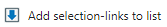

Quick Start Tutorial
Simple Mass Downloader uses a popup as its main interface. For quick access, pin the extension to the
Chrome
toolbar:
-
Click the Extensions button in the toolbar.
-
Find Simple Mass Downloader in the list.
-
Click the pin icon next to its name
You can then open the downloader at any time by clicking its toolbar icon.

Important note: please verify in your
Chrome
Download Settings that the following option:
Ask where to save each file before
downloading
is NOT checked!
Otherwise, for
every item in the download queue
you will be prompted to choose a
name/directory via a
Save As dialog. Imagine what that means for a list of, say, 500 downloads
or more.
Basic usage
Go to a web page, right-click it, and choose . This will show a
quick download dialog:
Check the desired file types (PDFs in this example), optionally choose a download directory
defined as a subfolder of Chrome's main Downloads directory, and finally click the
Download
now button.
The files start downloading and, if all goes well, you will find them in the
Downloads/Algebra subfolder.
That's all!
Tip: If you make a text selection on the web page, the extension
will try to include only the links from that selection
(the context menu will also include the option

)
This minimal workflow lacks advanced filtering/renaming options but may be appropriate in
many situations.
A more flexible workflow
Say, for example, that you visit a mathematics lecture-notes site with many PDF resources
and you need to download only the resources that include the term "group"
inside their
link text, as displayed on the page:
The typical Simple Mass Downloader popup window will look like this:
The steps explained:
-
First step: you press the Load page
links button. This usually fills
the resource list with all sorts of links, not only the desired PDFs.
-
Second step: you have to filter this list, such that
only the desired links remain
here.
Start filtering by entering pdf
in the extensions field (or pdf epub doc if you want several types), then enter group in the Text filter box.
You have now isolated all the desired PDFs. Next, check all
items at once (using the top master checkbox) or only a range (using
shift + click).
-
Third step: setting a custom download directory.
By default, all downloaded files go to Chrome's main download directory (usually named Downloads)
The extension cannot set folders outside this main download directory due to a browser extension
security limitation. However, it can set subfolders
inside
it.
So you write Algebra/Groups in the dedicated directory field. Now
all downloaded files will go
specifically to the Downloads/Algebra/Groups subfolder.
-
Fourth step: setting a custom name mask.
All files have a default filename.
For example, the highlighted item from the screenshot above will get the name MIT18_703S13_pra_l_1.pdf.
It is often better to use the link text displayed on the web page as the filename.
For this, use the name mask {text}.{ext}.
The same item will now get the more descriptive name
The alternating groups (PDF) (at least for mathematicians).
This mask is useful enough to have a dedicated button, but many other masks are also available. Click the corresponding help button for details.
-
Last step: click the Download now button to start downloading the checked items immediately. Alternatively, send the items to the queue by clicking the other button
, then select them for downloading later.
Download list panel
Here you can perform the usual download management operations: start items individually or in groups, pause, resume, cancel, or remove items.
There is a Select all button. You can also select a range
of items using shift + click, or select items individually using ctrl + click.
The inactive items from the queue can still be edited before downloading, either individually (using the corresponding button) or as a group using the multi-rename dialog. Selected items can be moved up or down using ctrl + up/down arrow keys.
This can be useful when using counter masks, for example.
The multi-rename dialog is a more advanced version of the simple name mask dialog from the resource list panel, with search-and-replace and preview functionality.
Finally, select the desired items and click the
Start selected button. A finished item looks like:
You can open the file directly by clicking its name, or open the directory where it was downloaded
using the corresponding folder icon.
Batch renaming
Sometimes, it is better to rename items in batches before downloading. In this
case, click
the other button
. This
will simply add the checked items to the
(passive) download list, with their
default filenames:
Of course, you can start individual items or edit their name or directory using the corresponding buttons.
Usually, it is better to rename the selected items in batches using the name masks from the
multi-rename dialog.
There is a Select all button. You can also select a range
of items using shift + click, or select items individually using ctrl + click.
Using appropriate name masks, the items get much better
names. Here we have used the {text} mask and the
{cc...} counter type mask,
but many other masks are available. Click the corresponding
for more details (this help button is visible only when the name masks field is focused).
Finally, select the desired items and click the
Start selected button. A finished item looks like:
You can open the file directly by clicking its name, or open the directory where it was downloaded
using the corresponding folder icon.
What's next
There are many other features. For example:
-
Links can be imported from the clipboard, from a text file, or generated using a
Pattern URL dialog.
Also, the links can be exported using a flexible mask system (this can be
useful if you want to use the generated list with an external file downloader).
See the  menu button.
menu button.
-
You can create complex filters and save them as custom categories (see the Custom
Categories section in the settings dialog).
-
The extension has a built-in routing system (see the Automatic Folders section in
the settings dialog). Here you can define custom folders where downloads can be
automatically directed based on user-defined rules.
- For images, there is also a special thumbnails view where items may be filtered
by size or sorted in descending order by size.
- The extension has a tabs dialog where you select tabs (active
tab, all tabs, left or right tabs) and optionally filters page items by various criteria.
Finally, the found links are added to the resource list and are ready for further operations (see the
 button).
button).